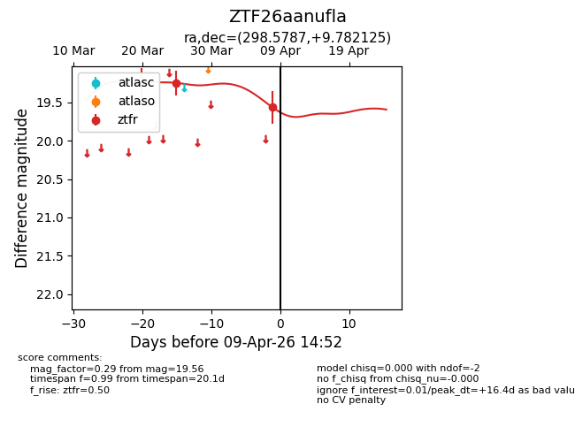
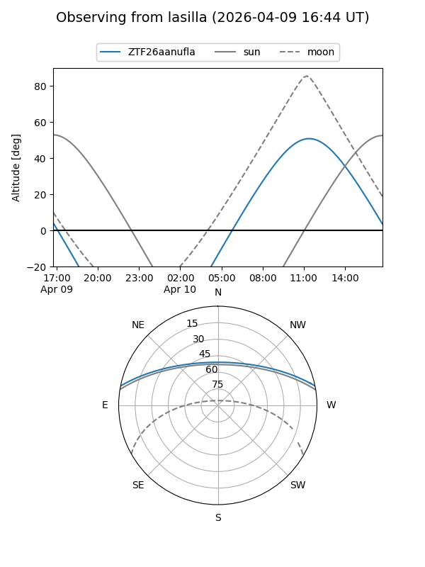
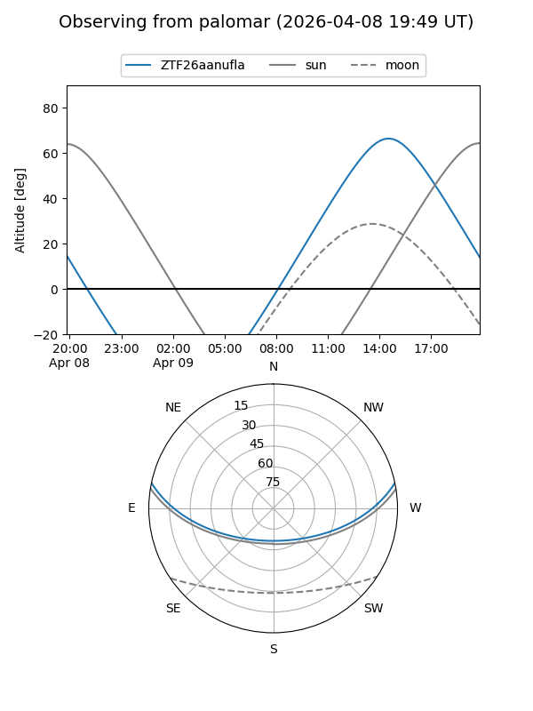
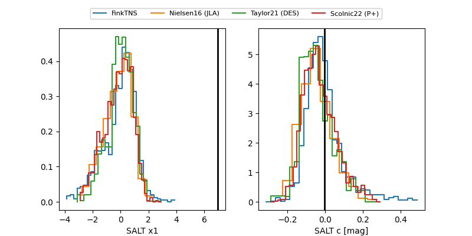

ZTF26aanufla
Target ZTF26aanufla at 2026-04-09 14:58
Aliases and brokers:
FINK: link
Lasair: link
ALeRCE: link
alt names
ZTF26aanufla (ztf,fink_ztf)
Coordinates:
equatorial (ra, dec) = 298.5787,+9.78212
equatorial (HMS+DMS) = 19:54:18.89,+09:46:55.65
galactic (l, b) = (48.9845,-9.21504)
Flags:
Photometry:
last ztfr=19.56
3 ztfr detections
Lightcurve

Visibility


Additional plots
